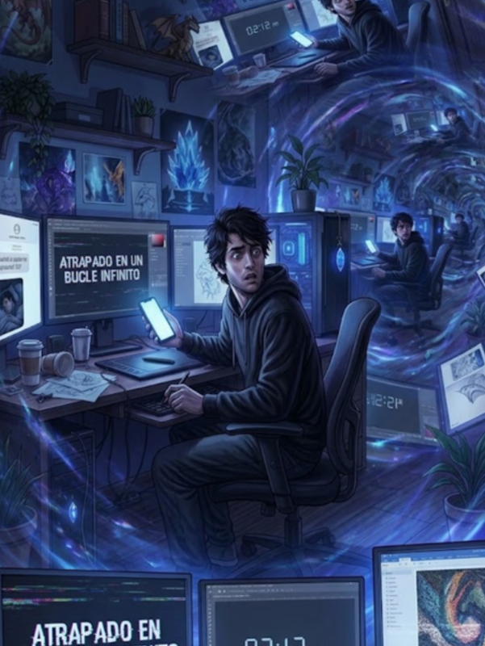

3/3
Camino Final: El Bucle Temporal
🔊 Narración:
Alex cruza el umbral temporal intentando advertirse a sí mismo. Tras un destello, despierta de golpe en su cama a las 2:13 AM. Al instante, su teléfono vibra en la oscuridad.
Al leer la pantalla, el horror lo paraliza: el mensaje y la foto acaban de llegar desde su propio número. Él mismo inició la pesadilla y ahora está atrapado en un bucle eterno.
♦ ───── ♦
Atrapado en un bucle infinito
Ayuda a Alex a escapar de este bucle